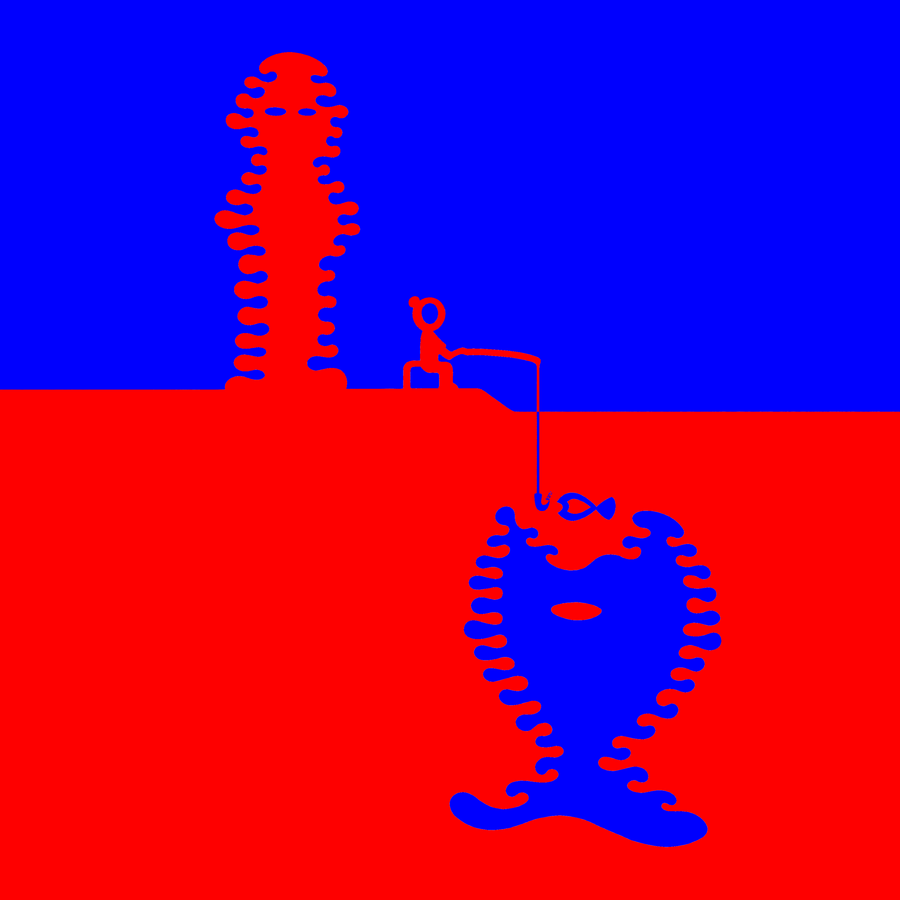

<h1>海盗日记</h1>
<br>
<br>
欢迎前往以下客户端订阅收听：<br>
- <a href="https://anchor.fm/piratediary">Anchor</a><br>
- Apple 播客<br>
- <a href="https://open.spotify.com/show/4RWR3iT9gqi4meRHOeCz1j">Spotify</a><br>
- 喜马拉雅<br>
- 小宇宙<br>
<br>
<div><a href="https://gniquyij.github.io/daily"></a></div><div style="border-top:1px solid #e1e4e8;padding-top:16px"></div>
<div>© 2018-2021 by YUQING JI</div>
<div style="padding-top:0.3em"><a href="https://gniquyij.github.io/">Blog</a> | <a href="mailto:yuqing.ji@outlook.com">Email</a> | <a href="https://github.com/gniquyij">Github</a> | <a href="https://www.instagram.com/gniquyij/">Instagram</a> | <a href="https://gniquyij.github.io/zh">中文</a></div>
